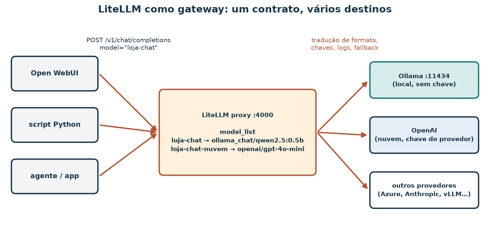
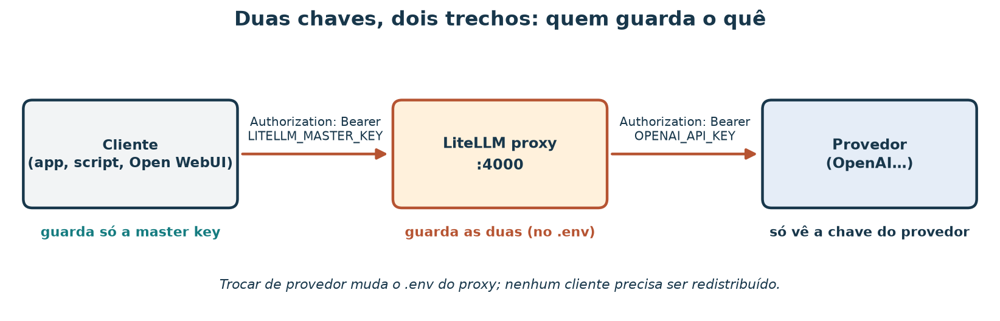
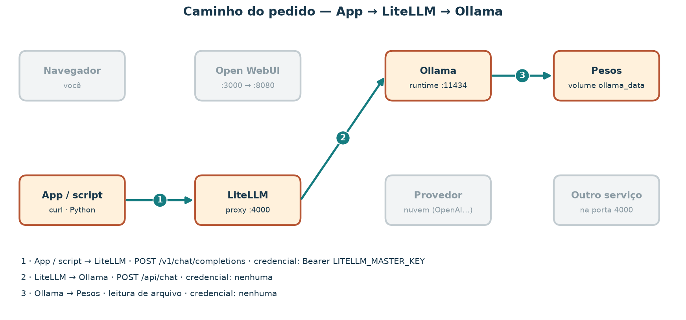

Um gateway para modelos de linguagem com LiteLLM
A loja de artesanato já tem três programas que querem conversar com um modelo de linguagem: a interface de chat do atendimento, um script que resume avaliações e um agente que consulta o catálogo. Cada um foi escrito para a API da OpenAI. Hoje o modelo é local, num Ollama; amanhã pode ser um provedor em nuvem, ou os dois, com um de reserva. Se cada programa guardar sua própria chave e seu próprio endereço, toda troca vira três mudanças de código e três cópias de segredo espalhadas.
Um gateway resolve isso: os programas falam um único contrato (OpenAI-compatible) com um único endereço, e o gateway decide para onde encaminhar cada pedido. Nesta aula você monta esse gateway com LiteLLM, usando um modelo local no Ollama, sem chave paga.
Ao concluir, você deverá conseguir separar a chave do
provedor da chave do proxy, escrever um
model_list com aliases, rodar LiteLLM como biblioteca e
como proxy (no host ou em contêiner), apontar um cliente para
http://127.0.0.1:4000/v1 e diagnosticar os erros mais
comuns pelo status e pela mensagem. Tudo o que você precisa está em litellm/
e em dois scripts da raiz. As respostas de erro mostradas aqui foram
registradas com LiteLLM 1.108.2; outras versões podem mudar textos e
códigos.
Roteiro de estudo
| Tempo sugerido | Atividade de estudo |
|---|---|
| 10 min | Situar o gateway entre aplicações e modelos |
| 10 min | Separar as duas chaves e preparar o .env |
| 10 min | Ler o model_list e os aliases |
| 10 min | Caminho A: uma completion pela biblioteca, sem proxy |
| 15 min | Caminhos B e C: subir o proxy na porta 4000 |
| 10 min | Cliente OpenAI-compatible contra o proxy |
| 15 min | Provocar e diagnosticar falhas com o explorador |
| 10 min | Exercício e resolução comentada |
1. O que um gateway faz

Figura 1 — Um contrato de entrada, vários destinos. O proxy traduz o formato, guarda as chaves dos destinos, registra uso e pode tentar um destino de reserva. A figura mostra papéis; ela não indica desempenho nem custo.
| Termo | Definição nesta aula |
|---|---|
| API OpenAI-compatible | Conjunto de rotas e formatos popularizado pela OpenAI:
POST /v1/chat/completions, GET /v1/models,
cabeçalho Authorization: Bearer <chave> |
| Provedor | Quem de fato executa o modelo: um serviço em nuvem ou um runtime local como o Ollama |
| Gateway / proxy | Serviço intermediário que recebe pedidos no contrato comum e os encaminha ao provedor certo |
| Alias | Nome estável que o cliente pede (loja-chat), mapeado no
proxy para um modelo concreto |
| Master key | Chave que os clientes apresentam ao proxy; ela não serve no provedor |
| Chave do provedor | Chave que o proxy apresenta ao provedor; os clientes nunca a veem |
LiteLLM tem duas formas. Como biblioteca
(import litellm), ela traduz chamadas dentro do seu
programa, sem servidor. Como proxy, ela vira um
processo HTTP que qualquer programa alcança. Os dois usam a mesma
notação de modelo: provedor/modelo, como
ollama_chat/qwen2.5:0.5b ou
openai/gpt-4o-mini.
2. Duas chaves, dois trechos

Figura 2 — Cada chave vale num trecho. Trocar de provedor muda o
.env do proxy; nenhum cliente precisa receber uma chave
nova.
O pacote traz o modelo de variáveis em litellm/.env.example:
# Chave do PROXY: quem chama http://127.0.0.1:4000 apresenta esta no header.
LITELLM_MASTER_KEY=sk-loja-local-troque
# Onde o proxy encontra o Ollama.
OLLAMA_API_BASE=http://127.0.0.1:11434
# Chave do PROVEDOR (opcional; só para o alias loja-chat-nuvem).
OPENAI_API_KEY=Prepare as cópias de trabalho e confirme que o Git as ignora:
cp material/litellm/.env.example material/litellm/.env
cp material/litellm/config.example.yaml material/litellm/config.yaml
git check-ignore -v material/litellm/.env material/litellm/config.yamlO check-ignore deve citar
material/litellm/.gitignore para os dois arquivos. Se não
imprimir nada, pare: o arquivo seria versionado. Troque
a master key de exemplo por um valor seu, começando com
sk-. Ao relatar a aula, mostre as chaves redigidas
(sk-***), nunca o valor.
3. O
model_list: aliases no lugar de modelos
model_list:
- model_name: loja-chat
litellm_params:
model: ollama_chat/qwen2.5:0.5b
api_base: os.environ/OLLAMA_API_BASE
- model_name: loja-chat-nuvem
litellm_params:
model: openai/gpt-4o-mini
api_key: os.environ/OPENAI_API_KEY
litellm_settings:
drop_params: true
# fallbacks: [{"loja-chat": ["loja-chat-nuvem"]}]
general_settings:
master_key: os.environ/LITELLM_MASTER_KEY| Chave | Leitura |
|---|---|
model_name |
O alias que o cliente pede no campo model |
litellm_params.model |
O destino real, no formato provedor/modelo |
api_base |
Endereço do provedor; para o Ollama, a URL do runtime |
os.environ/VAR |
Lê o valor da variável de ambiente VAR quando o proxy
sobe; o YAML não guarda segredo |
drop_params |
Descarta parâmetros que o destino não aceita, em vez de falhar |
fallbacks |
(comentado) Se loja-chat falhar, tentar
loja-chat-nuvem |
master_key |
A chave que o proxy exige dos clientes |
O alias é o que torna a troca barata: os três programas da loja pedem
loja-chat. Mudar de qwen2.5:0.5b para outro
modelo é editar uma linha do YAML e reiniciar o proxy.
4. Pré-requisito: um Ollama alcançável
O destino local é o Ollama do stack de Open WebUI (open-webui/).
Quem chama o Ollama precisa de um endereço que funcione de onde
ele roda:
| Quem chama | Endereço do Ollama | Como garantir |
|---|---|---|
Processo no host (biblioteca, proxy via uv) |
http://127.0.0.1:11434 |
Subir o stack com docker-compose.ollama-host.yml, que
publica a porta só em 127.0.0.1 |
| Contêiner na rede do stack (proxy via Docker) | http://ollama:11434 |
O compose de litellm/ entra na rede
open-webui_default e sobrescreve
OLLAMA_API_BASE |
cd material/open-webui
docker compose -f docker-compose.yml -f docker-compose.ollama-host.yml up -d
docker compose exec ollama ollama pull qwen2.5:0.5b
curl -s http://127.0.0.1:11434/api/tagsO curl deve devolver um JSON cuja lista
models inclui qwen2.5:0.5b. Sem Docker, você
ainda pode fazer as seções 5 a 8 no modo --offline dos
scripts e no explorador; a seção 10 descreve esse caminho.
5. Caminho A — biblioteca, sem proxy
O script demo_litellm_sdk.py
faz uma completion com litellm.completion. Comece pelo modo
--offline, que não acessa a rede e não exige o pacote:
uv run python scripts/demo_litellm_sdk.py --offlineSaída esperada (início):
Chamada que litellm.completion receberia:
{
"model": "ollama_chat/qwen2.5:0.5b",
"messages": [
{
"role": "system",
"content": "Política da loja: o cliente tem 7 dias corridos após o recebimento para solicitar devolução de peça sem uso, com embalagem original."
},A chamada termina com "max_tokens": 80 e
"api_base": "http://127.0.0.1:11434". Com o Ollama no ar,
rode de verdade:
uv run --with litellm python scripts/demo_litellm_sdk.pyA saída é uma frase gerada pelo modelo (varia a cada execução) e uma
linha tokens: prompt=… resposta=…. Nesse caminho
não há porta 4000: o processo da biblioteca é o seu
script, que fala direto com o Ollama. É o jeito mais curto para um
script isolado. O custo aparece quando há vários programas: cada um
embute biblioteca, endereço e chave.
6. Caminhos B e C — o proxy na porta 4000
B — proxy no host, via
uv
Terminal 1, na raiz do repositório:
set -a && . material/litellm/.env && set +a
uv run --with 'litellm[proxy]' litellm --config material/litellm/config.yaml --host 127.0.0.1 --port 4000Quando o log mostrar
Uvicorn running on http://127.0.0.1:4000, o proxy está
pronto. --host 127.0.0.1 restringe o acesso à própria
máquina; sem ele, o proxy escuta em todas as interfaces.
C — proxy em contêiner
Com o stack de Open WebUI no ar (ele cria a rede
open-webui_default):
cd material/litellm
docker compose up -d
docker compose logs -f litellmO docker-compose.yml
monta o config.yaml como somente leitura, lê o
.env, publica 127.0.0.1:4000 e troca
OLLAMA_API_BASE para http://ollama:11434, o
nome do serviço na rede compartilhada. B e C expõem o mesmo
contrato HTTP; o cliente não sabe qual dos dois está no ar. Use
um de cada vez, porque os dois ocupam a porta 4000.
Primeiras verificações
curl -s http://127.0.0.1:4000/health/liveliness
curl -s http://127.0.0.1:4000/v1/models -H "Authorization: Bearer $LITELLM_MASTER_KEY"Respostas registradas com LiteLLM 1.108.2:
"I'm alive!"
{"data":[{"id":"loja-chat","object":"model",...},{"id":"loja-chat-nuvem","object":"model",...}],"object":"list"}/v1/models lista aliases, não os
modelos do Ollama. O alias de nuvem aparece mesmo sem chave do provedor:
o proxy só descobre a falta da chave quando tenta usá-la.
7. O cliente fala só com o proxy
O script demo_litellm_proxy.py
usa só a biblioteca padrão do Python. Ele lê
material/litellm/.env (o ambiente do processo tem
prioridade) e faz três pedidos: liveliness, modelos e uma chat
completion no alias loja-chat. Veja primeiro o que ele
enviaria:
uv run python scripts/demo_litellm_proxy.py --offline[chat]
POST http://127.0.0.1:4000/v1/chat/completions
Authorization: Bearer sk-***
Content-Type: application/json
{"model": "loja-chat", "messages": [{"role": "user", "content": "Em uma frase: o que faz um gateway de LLM?"}], "max_tokens": 80}Depois, com o proxy no ar:
uv run python scripts/demo_litellm_proxy.pyA saída esperada tem três linhas de status 200
([liveliness],
[modelos] HTTP 200: loja-chat, loja-chat-nuvem e
[chat] HTTP 200), seguidas da frase gerada. O mesmo pedido
com curl:
curl -s http://127.0.0.1:4000/v1/chat/completions \
-H "Authorization: Bearer $LITELLM_MASTER_KEY" \
-H "Content-Type: application/json" \
-d '{"model":"loja-chat","messages":[{"role":"user","content":"oi"}]}'E com o pacote openai, sem mudar nada além do endereço e
da chave:
uv run --with openai python -c '
import os
from openai import OpenAI
cliente = OpenAI(base_url="http://127.0.0.1:4000/v1", api_key=os.environ["LITELLM_MASTER_KEY"])
r = cliente.chat.completions.create(model="loja-chat", messages=[{"role": "user", "content": "oi"}])
print(r.choices[0].message.content)'Em todos os casos, o cliente aponta para 127.0.0.1:4000
e apresenta a master key. Nenhum deles conhece
api.openai.com nem a porta 11434. O Open WebUI também pode
usar o proxy como conexão OpenAI-compatible: de dentro da rede do stack,
o endereço é http://litellm:4000/v1, quando o proxy roda
pelo caminho C.
8. Quando dá errado: ler o status e a mensagem
O proxy devolve o erro do primeiro salto que falhou,
mesmo quando a causa está mais adiante. Estas respostas foram
registradas com LiteLLM 1.108.2, sem banco de dados e sem Ollama no ar;
estão completas em litellm/respostas-registradas.json.
| Situação | Status | Trecho da mensagem | Onde está o problema |
|---|---|---|---|
| Chave diferente da master key | 400 | No connected db. |
Salto cliente → proxy |
Alias inexistente (model=nao-existe) |
400 | Invalid model name passed in model=nao-existe |
model_list ou nome pedido |
| Ollama fora do ar | 500 | Cannot connect to host … 11434 |
Salto proxy → Ollama |
Alias de nuvem sem OPENAI_API_KEY |
500 | Missing credentials |
.env do proxy |
| Proxy parado | — | conexão recusada (sem HTTP) | Processo do proxy |
| Outro serviço na porta 4000 | 200 | HTML no lugar de JSON | Conflito de porta |
A primeira linha merece atenção. Sem banco de dados, o proxy conhece
uma única chave, a master key; qualquer outra é procurada num banco de
chaves virtuais que não existe, e o erro sai como 400
No connected db.. Com banco configurado, a mesma situação
costuma dar 401. A última linha aconteceu de verdade na máquina de
preparo desta aula: outro programa ocupava a porta 4000 e respondia
páginas HTML. O script detecta esse caso e sugere
ss -ltnp | grep 4000.
Provoque três dessas falhas com o próprio cliente:
LITELLM_MASTER_KEY=sk-errada uv run python scripts/demo_litellm_proxy.py
uv run python scripts/demo_litellm_proxy.py --modelo nao-existe
uv run python scripts/demo_litellm_proxy.py --base http://127.0.0.1:4999Cada execução termina com uma linha de diagnóstico: chave diferente da master key, alias desconhecido e conexão recusada, respectivamente.
O caminho de cada pedido no explorador
O explorador do caminho do pedido mostra, para cada cenário, os saltos, a porta, a credencial que viaja e o status que volta. Os cenários de erro usam as respostas registradas acima. Consulte o roteiro de exploração.
Percorra o caminho da requisição
Escolha um cenário e veja qual chave viaja em cada salto. Os conteúdos das mensagens são ilustrativos.

Figura 3 — Espelho estático de um cenário. No explorador, troque o cenário e o salto em detalhe para ver pedido e resposta de cada trecho.
Atividade no explorador.
- Compare App → LiteLLM → Ollama e App →
LiteLLM → provedor. Em qual salto aparece
OPENAI_API_KEY? - Abra Ollama fora do ar e escolha o salto 2. Por que o cliente recebe 500, e não um erro de conexão?
- Abra Master key errada. Quantos saltos acontecem?
- Exporte o CSV de um cenário de erro.
Resolução comentada. A chave do provedor só viaja no salto proxy → provedor; o app apresenta a master key nos dois cenários. No Ollama fora do ar, o cliente conversa normalmente com o proxy, que tenta o salto seguinte, recebe conexão recusada e traduz isso em 500 para o cliente. Com a master key errada, o pedido para no primeiro salto: nenhum destino é acionado, e trocar de modelo não resolveria nada.
9. Limitações
- O proxy desta aula roda sem banco de dados: não há chaves virtuais por equipe, limites de gasto nem painel administrativo. Esses recursos existem e exigem um banco (veja a documentação).
- Imagem
main-lateste pacote sem versão fixada mudam com o tempo. Para reproduzir resultados, fixe uma versão. - O
.gitignoreprotege o repositório, não a máquina: um.envlegível por outros usuários, colado num chat ou num print continua exposto. - O modelo local pequeno responde mal a perguntas abertas. A aula avalia o caminho do pedido, não a qualidade da resposta.
10. Exercício
Entregue:
- As três linhas do seu
.envcom valores redigidos (sk-***) e uma frase dizendo quem guarda cada chave. - A saída de
git check-ignore -vpara.enveconfig.yaml. - A saída do Caminho A (
demo_litellm_sdk.py), real ou--offline. - A saída de
/health/livelinesse de/v1/modelsno proxy (caminho B ou C). - Uma chat completion via proxy com o alias
loja-chat(script,curlou pacoteopenai). - Duas falhas provocadas, com status, trecho da mensagem e o salto onde está o problema.
Caminho sem Docker nem Ollama. Entregue 1 e 2; para
3 e 5, use o modo --offline dos dois scripts; para 4, suba
o proxy pelo caminho B mesmo sem Ollama (ele sobe e responde a
/health e /v1/models); para 6, provoque a
master key errada e o Ollama ausente, que funcionam exatamente nessa
situação.
Resolução comentada
Chaves. LITELLM_MASTER_KEY=sk-*** fica
com os clientes e com o proxy; OPENAI_API_KEY=sk-*** (ou
vazia) fica só no proxy; OLLAMA_API_BASE é um endereço, não
um segredo. O cliente nunca recebe a chave do provedor.
Ignore. As duas linhas citam
material/litellm/.gitignore com os padrões
.env e config.yaml.
Caminho A. No --offline, a chamada
mostra ollama_chat/qwen2.5:0.5b, a mensagem de sistema com
a política de devolução e api_base. Na execução real, a
frase gerada deve mencionar 7 dias, porque a política está no sistema;
um modelo pequeno às vezes erra mesmo assim.
Proxy. "I'm alive!" e uma lista com
loja-chat e loja-chat-nuvem.
Completion.
[chat] HTTP 200 · modelo pedido: loja-chat, seguida de uma
frase. Os três clientes (script, curl, openai)
usam a mesma URL base e a mesma master key.
Falhas. Master key errada: 400
No connected db., primeiro salto. Alias inexistente: 400
Invalid model name, configuração ou nome pedido. Ollama
ausente: 500 Cannot connect to host … 11434, segundo salto.
Proxy parado: conexão recusada, sem status HTTP. Em cada caso, a
correção acontece num lugar diferente; ler o status sem a mensagem
levaria ao lugar errado.
Referências e artefatos
- LITELLM. Proxy — quick start. docs.litellm.ai/docs/proxy/quick_start.
Para consultar:
model_list,master_keye primeira chamada. - LITELLM. Proxy — configs. docs.litellm.ai/docs/proxy/configs.
Para aprofundar:
os.environ/,litellm_settingse fallbacks. - LITELLM. Providers — Ollama. docs.litellm.ai/docs/providers/ollama.
Para consultar: prefixos
ollama/eollama_chat/e oapi_base. - LITELLM. Docker deploy. docs.litellm.ai/docs/proxy/deploy. Para aprofundar: imagens, versões fixas e deploy com banco de dados.
- OPENAI. Chat Completions API reference. platform.openai.com/docs/api-reference/chat. Para consultar: o contrato que o proxy reproduz.
Consulta dos materiais on-line: 7 nov. 2026.
| Artefato | Papel |
|---|---|
material/litellm/config.example.yaml |
Aliases loja-chat e loja-chat-nuvem |
material/litellm/.env.example |
Forma das variáveis; a cópia .env é ignorada pelo
Git |
material/litellm/docker-compose.yml |
Proxy em contêiner na rede do stack Ollama |
material/litellm/respostas-registradas.json |
Respostas reais do proxy em cenários de erro |
scripts/demo_litellm_sdk.py |
Caminho A, com --offline |
scripts/demo_litellm_proxy.py |
Cliente do proxy só com biblioteca padrão, com
--offline e diagnóstico |
material/open-webui/ |
Stack Ollama usado como destino local |
material/bi-llm-local/ |
Explorador do caminho do pedido |
material/imagens/ (regenerar:
.local/scripts/gerar_figuras_llm_local.py),
scripts/gerar_bi_llm_local.py |
Figuras e dados do explorador |